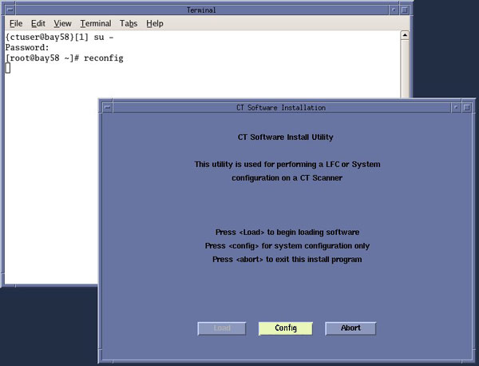
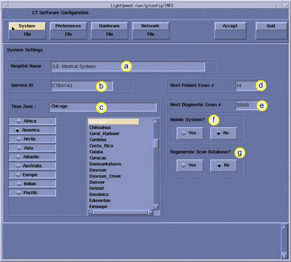
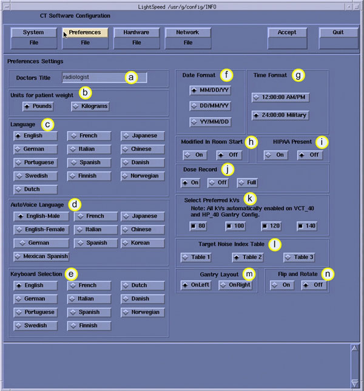
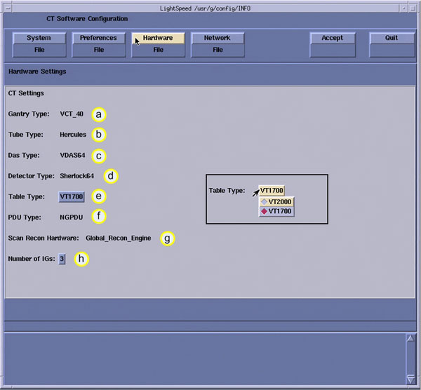
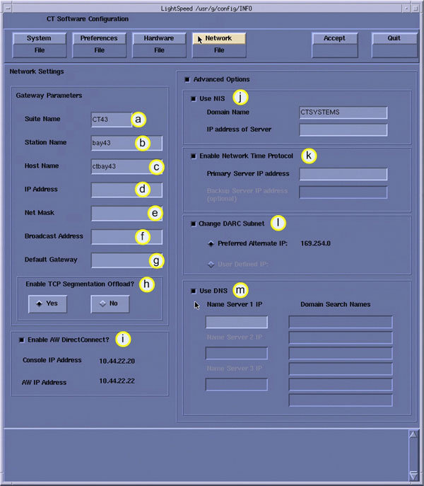
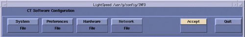
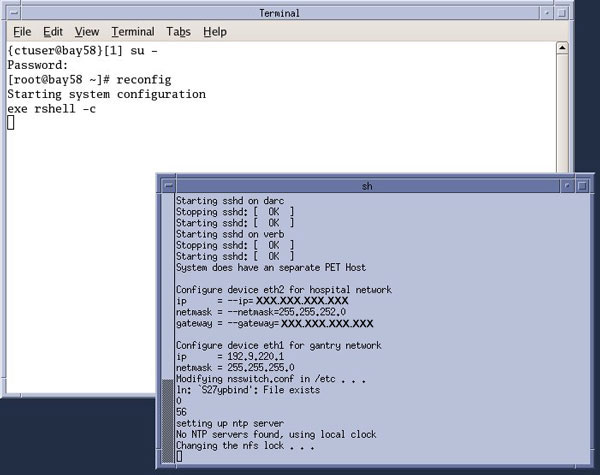
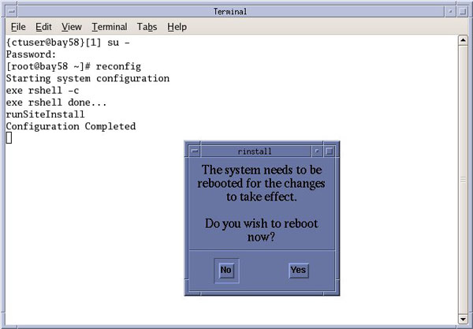

Operating Documentation
Direction 5193574-800, Rev# 22
LightSpeed 7.X Service Methods
Module Version 1.0, Version Date 8/6/12
Operating Documentation |
| Required Persons | Preliminary Reqs | Procedure | Finalization |
|---|---|---|---|
| 1 | Not Applicable | 30 mins | 30 mins |
The following procedure describes and illustrates the System Configuration procedure commonly referred to as the “reconfig” script. It is important to follow the steps listed in the order presented.
On the following screens, you should make the changes necessary, pressing the corresponding tabs at the top of the screen to move from screen to screen. When you are done, you can either press the [ACCEPT] button to start the reconfiguration process, or press the [QUIT] button to exit without changing the system configuration.
While the reconfiguration is going on, messages are displayed in a Shell Window that closes when reconfiguration is complete. Should you later want to review the reconfiguration output, it is logged to the following file: /var/adm/install.log.YYYYMMDDWWWHHMMSS, where YYYYMMDDWWWHHMMSS is the Date/Time that the reconfiguration was started.
To view the file, type: more /var/adm/install.log.YYYYMMDDWWWHHMMSS
| NOTE: | There is NO safe way to abort the reconfiguration after pressing the [ACCEPT] button. If the entries made in the screens were incorrect, DO NOT try to stop the reconfiguration. Instead, wait for it to complete and rerun “reconfig” entering the correct parameters. |
| Last Revised: | 19 Julye 2012 |
| Condition | Reference | Effectivity |
|---|---|---|
The CT System hardware must be in good working order. | - | - |
Only trained service personnel should service the GE CT Scanner. | - | - |
Shut down Applications from the Common Service Desktop, Utilities Tab.
Open a Terminal Window, and log on as root:
Type: {ctuser@hostname} su - and press <ENTER>.
Type the root password and press [ENTER].
Launch the Configuration utility:
Type: [root@hostname]# reconfig and press <ENTER>.
The CT Software Install Utility Window will appear.
Illustration 1: CT Software Install Utility Window

| NOTE: | The following shows the screens that are used to change the configuration of the system. These screens are the same as those used for the Software Configuration during Load From Cold. The actual screens will vary depending on the current configuration of your system. |
Click [CONFIG].
Illustration 2: System Configuration Window

Configure System Settings
Hospital Name (Illustration 2, item a) - Configures the name that will show up on images produced by this scanner. Example: ST MARY'S HOSPITAL
Service ID (Illustration 2, item b) - Issued by the Service organization. Example: 262785CT2 (no spaces, 14 character limitation)
Select the Time Zone for the site.
Next Patient Exam Number - Customer selected. At initial system installation, Type: 1.
Next Diagnostic Exam # - Configures the next Exam number the scan user interface will use. Customer Selected. At initial system installation, Type: 1.
Mobile System - Select to tell the software if this CT is in a mobile environment or not.
Regenerate Scan Database - Determines whether the Scan Database will be regenerated during reconfiguration. Select [YES] if this is an installation with no customer data present. Destructive ! Will destroy any Scan Data present. Regenerates just the Scan Database.
Click [PREFERENCES] to display the Preferences Configuration window.
Illustration 3: Preferences Configuration Window

Configure Preferences Settings.
Doctors Title - Enter the title for the Doctor (e.g., radiologist.)
Units for Patient Weight - Tells the software whether pounds or kilograms are being used.
Language - Configures the language to be displayed on the Application screens.
AutoVoice Language - Configures the language heard in the scan room.
Keyboard Selection - Configures the language specific keyboard character set.
Date Format - Configures the format in which the date will be displayed on the images.
Time Format - Configures the format in which the time will be displayed on the images.
| NOTE: | For non-English sites, [24:00:00 Military] should be selected. |
Modified In Room Start - Be sure "Off" is selected, unless the site is in Japan, in which case, this feature should be "On".
HIPAA Present - Be sure “Off” is selected unless specifically requested by the Customer.
| NOTE: | This selection must be set to [On] if Data Privacy (User Logon/Logout) HIPAA is to be implemented on system. After selecting [On] and completing the “reconfig” process and reboot, User Login will be required. User Login’s are set up and configured using the EA3 Admin Browser Utility found in the Common Service Desktop (CSD) > [Utilities] Tab. |
Dose Record - Configures support for DICOM Dose SR Record option for saving dose information with study. Default is “OFF”. The dose information is saved in a DICOM structured report. The DICOM standard defines a new DICOM X-Ray Radiation SR SOP class which the other systems must support. The Dose SR feature saves an exam's dose information in this format.
Select ON - Saves the dose information in a DICOM Enhanced SR SOP Class
Select OFF - Turns off option
Select FULL - Saves the dose information in a DICOM X-Ray Radiation Dose SR SOP Class
| NOTE: | Effective Software Release 11HW12.5 (LightSpeed VCT) and 11MW44.10 (CT750HD) or later, Dose Information Display option is removed from [Preference Tab]. These software release introduced Dose Check functionality which no longer allows the disabling of display of Dose Information Display. |
| NOTE: | This preference shall not be enabled unless specifically requested by the Customer and the Evaluation of Dose SR Compatibility procedure has been executed and indicates that the other hospital systems support the Dose Report SOP classes. |
Select Preferred kVss - Configures the preferred kV that the Fast Cal Routine will calibrate (80, 100, 120, 140 in the Selected Preferred Fast Cal kV field). The default selections are 80, 100, 120, and 140. All defaulted ON for VCT & CT750 HD systems.
Target Noise Index Table - Be sure Table 2 is selected.
Gantry Layout - Configures the preference for Patient loading. Choose correct orientation depending on site specific Gantry layout.
Flip and Rotate - Configures the preference for allowing the Flip and Rotate feature to be turn on in the User Interface on the (Left) SCAN Monitor. This preference allows the Customer to apply custom orientation changes based on Exam Type and Reconstruction methods on DICOM images that will be transferred to PACS and related systems.
| NOTE: | This preference shall not be enabled unless specifically requested by the Customer and the Evaluation of Image Flip and Rotate Compatibility procedure has been executed and all DICOM test images pass orientation check |
Click [HARDWARE] to display the HD Hardware Settings Screen.
Illustration 4: Hardware Configuration Window

Configure Hardware Settings.
Gantry Type - Indicates the type of Gantry that is installed.
Tube Type - Indicates the type of X-Ray Tube that is installed.
DAS Type - Indicates the type of DAS that is installed.
Detector Type - Displays the detector type: Example: Colorado64, for CT750 HD.
Table Type - Select the table type. The type of table shipped can be determined by reviewing the order information.
VT1700 - 1700mm scannable range with 227kg (500lb) patient weight
VT2000 - 2000mm scannable range with 227kg (500lb) patient weight
PDU Type - Indicates the type of PDU that is installed.
Scan Recon Hardware - Indicates console type.
Number of IGs - Indicates the number of IG computers installed.
Select 1 if one IG computer installed
Select 3 if three IG computers installed
Click [NETWORK] to display the Network Settings Screen.
Illustration 5: Network Configuration Window

| NOTE: | This screen provides the ability to declare the CT system on a hospital network. Key information such as Host Name, IP Address, Net Mask (for CT systems on a subnet) must be obtained from the hospital network administrator. |
Configure Network Settings.
Enter the Suite Name. The Suite name must start with a letter, followed by three (3) alpha-numeric characters. Total must be four characters long. Typically, you should use su01 or ct01 (“su” and “ct” must be lowercase), unless the customer prefers a different suite name.
Enter the hospital provided Station Name.
MUST NOT exceed 16 characters.
MUST only contain the following characters: a through z, A through Z, 0 through 9, - and _.
| NOTE: | If left blank, the Station Name defaults to the Host Name. |
Enter the hospital provided Host Name. The Host Name identifies the network host name and AE Title of the CT system to the hospital’s network. The Host Name:
MUST NOT exceed 16 characters
MUST only contain the following characters: a through z, A through Z, 0 through 9, - and _ (Host Name MUST be Alpha-Numeric).
MUST have at least one of the following characters: a through z or A through Z.
Enter the hospital provided IP Address for the system
Enter the hospital provided Net Mask Address for the system.
Enter the hospital provided Broadcast Address for the system.
Enter the hospital provided Default Gateway Address for the system.
Enable TCP Segmentation Offload - Default [YES]. If network transfers to certain PACS systems are slow, this can be set to No and may increase the transfer speed.
Enable [AW DirectConnect] if option provided with system. Reviewing the order information to see if option is included.
| NOTE: | Items j – m are visible only when Advanced Options is selected. |
Enable [Use NIS], if so instructed by hospital. Enter the hospital provided NIS Domain Name and IP Address for the system.
Enter Domain Name
Enter NIS Server IP
| NOTE: | [Use NIS] option is only available if [Use DNS] is disabled. Both options can not be enabled. |
| NOTE: | NIS - Network Information Service: Client - Server directory service protocol for distributing user and host names between computers and computer networks. |
Enable [Enable Network Time Protocol], if so instructed by hospital. Hospital must have an NTP Server available.
Enter Primary NTP Server IP
Enter Back Up NTP Server IP, if available
| NOTE: | NTP - Network Time Protocol - Protocol for synchronizing time between computers and computer networks. |
Enable [Change DARC Subnet], if so instructed by hospital.
Preferred alternative, or
Enter hospital supplied alternative
| NOTE: | Only enable this feature if there is an IP conflict between the system local network and the hospital local network. The GOC 6 series console utilizes a DHCP Server to configure the Console local network address for communications between Host, Gantry/Table and Reconstruction Engine Computers. Default local addresses in the GOC 6 series console use the following local Octets: 172.16.xxx.xxx |
Enable [Use DNS], if so instructed by hospital. Hospital must have an DNS Server available.
Enter DNS Server IP
Domain Search Names (Typically the domains associated with PACS and other archive equipment on customer’s network.)
Enter addition DNS Servers if requested
| NOTE: | [Use DNS] option is only available if [Use NIS] is disabled. Both options can not be enabled. |
| NOTE: | DNS - Domain Name System - Hierarchical distributed naming system for computers, services, or any resource connected to a network. It associates various information with domain names assigned to each of the participating entities. Most importantly, it translates domain names meaningful to humans into the numerical identifiers associated with networking equipment. |
Review all screens to be sure the information entered is correct before proceeding to the next step.
Click [ACCEPT] to accept the changes made.
Illustration 6: Accept Configuration Window

After clicking [ACCEPT] the system configures the system. While the configuration is going on, the results are displayed in a Shell window that closes when the loading process is complete.
Illustration 7: Shell Configuration Window

When the configuration changes are complete, the system displays a prompt to reboot.
Click [YES].
Illustration 8: Configuration Complete Window

The system will automatically log in as ctuser after the reboot. Select [OK] on the Autostart Disabled popup message.
Open a Terminal Window. Type: {ctuser@hostname} st<ENTER>
Remember, if necessary perform System State Save Restore whenever the “reconfig” script is executed.
Refer to System Scanning Test to confirm proper operation.